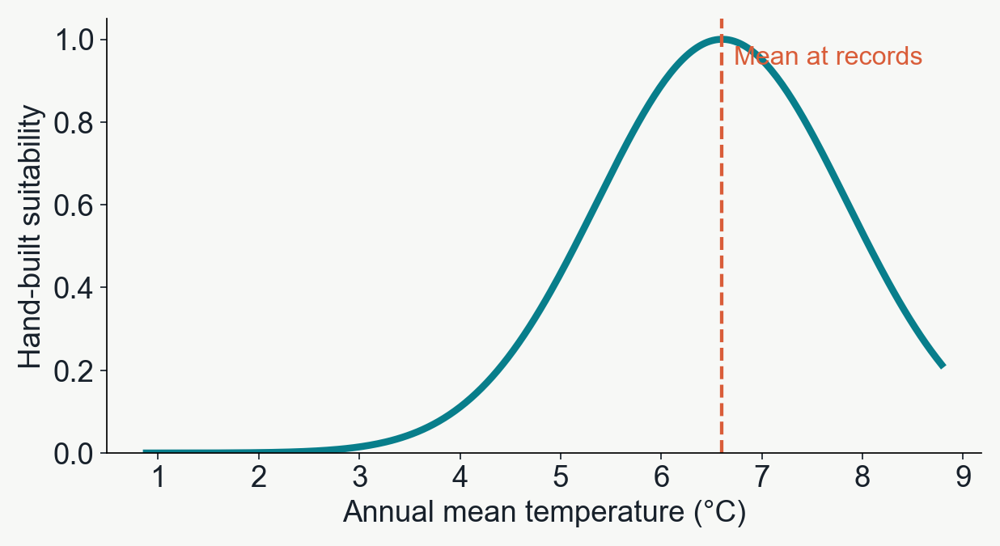
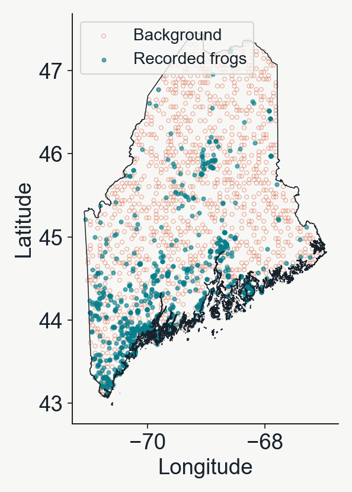
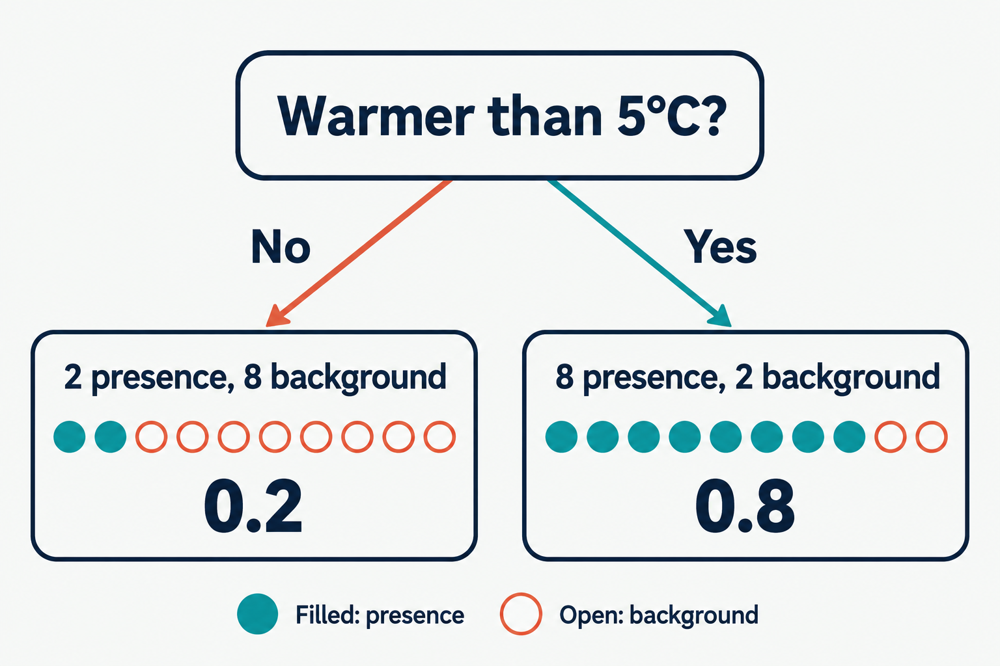
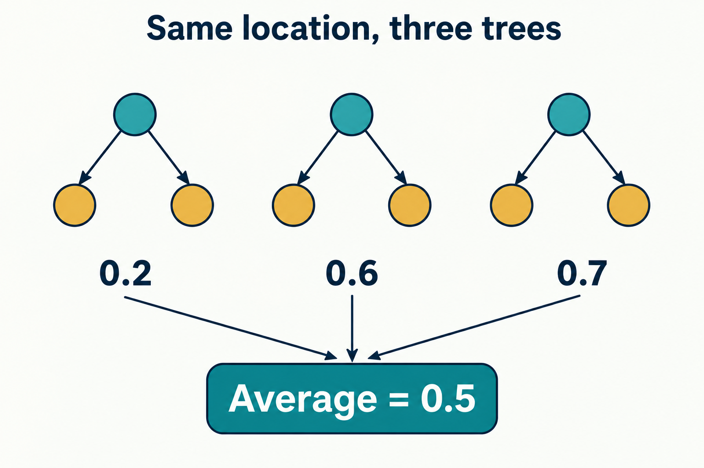
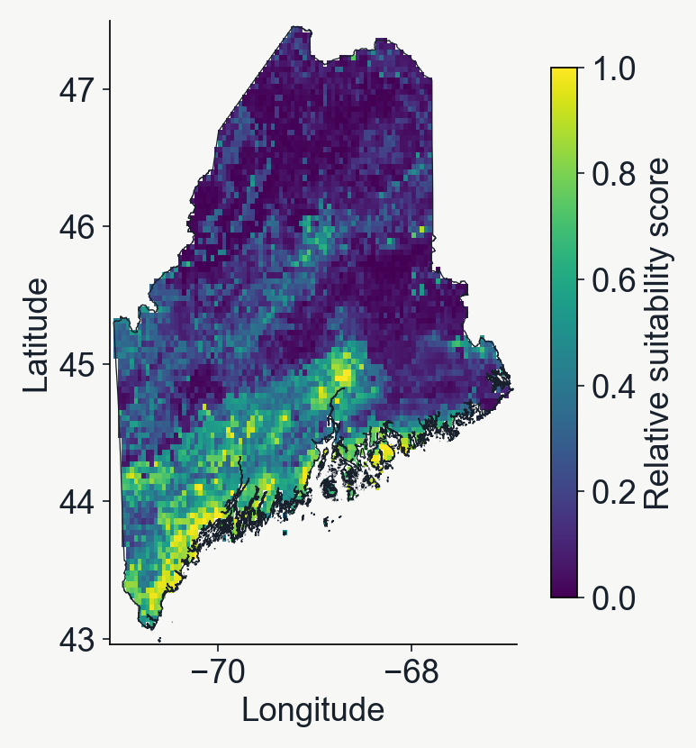

Lab 07
A first machine learning
species distribution model
Learning complex, non-linear patterns in environmental data
BIO597 Spatial Analysis of Biodiversity
Last week
We chose the shape of the temperature response
Highest suitability near the mean temperature at records.
That was our assumption.
Today the model will learn a response curve, and it might not be very normal at all!

The observations
Recorded environments and available environments
1 A frog record
0 A background sample
Background describes the climate available across Maine.
This is similar to what we did last week.

The input to the machine learning model is a table
Rows are occurrences or background points + environment
Climate columns are 'features' and the label column is the 'target'.
| Temperature (°C) | Annual rainfall (mm) | Label |
|---|
| 5.2 | 1,100 | 1 frog record |
| 6.8 | 1,250 | 1 frog record |
| 2.1 | 1,000 | 0 background |
| 6.0 | 1,160 | 0 background |
One decision tree
A question separates groups of examples
Within each final group, predict the average label.
There are, on average, more background points in the 'cold' class when the split is at 5 degrees C.
Illustration only. The model learns its own thresholds.

A deeper decision tree
Two levels of temperature splits
A 6°C location follows the highlighted path and receives a score of 0.8.
Depth 2 means two splits along each path.
A fitted tree
Decision tree predictions take on a step-shaped response
The group boundaries come from the training data.
A random forest
Many trees contribute to one score
Each tree learns from a different resample of the training records.
The forest averages their scores.
Three trees shown here. The lab uses 100.

Model validation
The use of training vs testing sets
Test data is withheld during training and used to evaluate model performance on 'unobserved' data.
The standard scikit-learn API
Learn a relationship, then apply it
.fit()
Learn the mapping from environment ('features') to presence/absence ('targets').
.predict()
Predict presence/absence for environment of test-set and compare to known test-set labels.
model.fit(X_train, y_train)
scores = model.predict(X_test)
X = selected climate columns
y = presence/background labels
Evaluating predictions
Error is the distance from the assigned label
| Known label | Prediction score | Absolute error |
|---|
| 1 frog record | 0.8 | 0.2 |
| 0 background | 0.3 | 0.3 |
| 1 frog record | 0.4 | 0.6 |
Average error = (0.2 + 0.3 + 0.6) / 3 ≈ 0.37
Mean absolute error (MAE). Lower is better.
Scaling to more predictors
Does adding more features (more predictors) add useful information?
Would two places with similar temperature always suit a frog equally well? What if one was super arid and the other humid?
The comparison
Temperature alone versus three climate variables
In this example, precipitation reduces test error, but this isn't necessarily always the case.
Projection
Running 'predict()' function across the landscape
Once the ML model is fit to the data, you can use the 'predict()' function to project suitability.
Extract the 3 fitted bioclim variables at each cell of the raster.
A high score means climate is more suitable (under this model).

Variable importance
Which variables helped the trees separate labels?
Not all variables contribute equally. Variable importance isn't necessarily _explanatory_, it is correlated though.